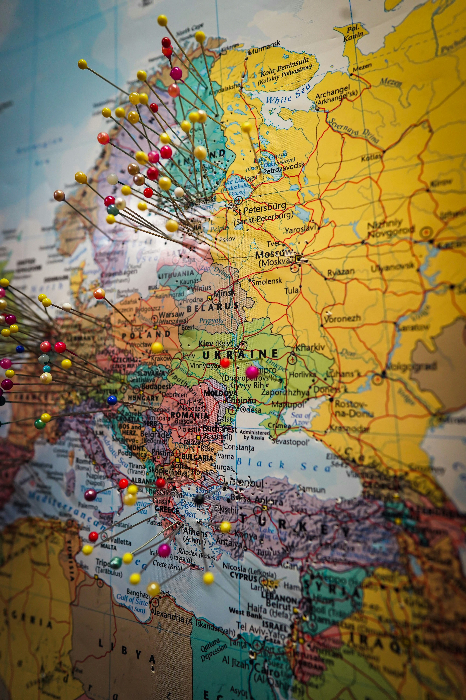
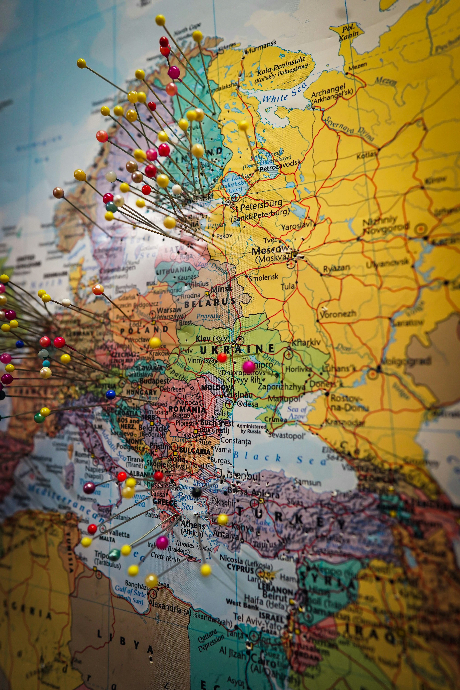

About Traveling on a budegt and screenshots
Finding the cheapest plane tickets can depend on various factors, but there are some general trends that travelers often consider: Tuesday Afternoons: Many travel experts suggest that Tuesday afternoons are a good time to look for cheap flights. Airlines often release new fare sales on Monday evenings, and other airlines may lower their prices to match or compete by Tuesday. **Wednesday: Another commonly mentioned day for finding deals is Wednesday. Airlines may adjust prices based on competitors' moves, and by midweek, the initial rush of the week's bookings has passed. Weekends:Some studies have suggested that weekends, particularly on Sundays, can be a good time to find lower airfares. Airlines may launch sales over the weekend to attract leisure travelers. Off-Peak Seasons: Booking during off-peak seasons for travel, such as midweek flights or during shoulder seasons, can often lead to lower prices. Early Morning or Late-Night Flights:Flights during less desirable times, such as early in the morning or late at night, may be cheaper as these are less popular among travelers. Set Fare Alerts: Utilize fare alert tools or apps that notify you when prices drop for your chosen routes. This allows you to monitor prices and book when the cost is lower. Book in Advance: Generally, booking in advance can help secure lower fares. However, the optimal booking window can vary depending on the route and time of year.
Traveling on a budget screenshots

 
